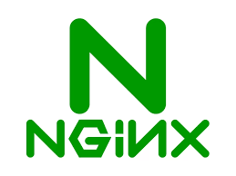
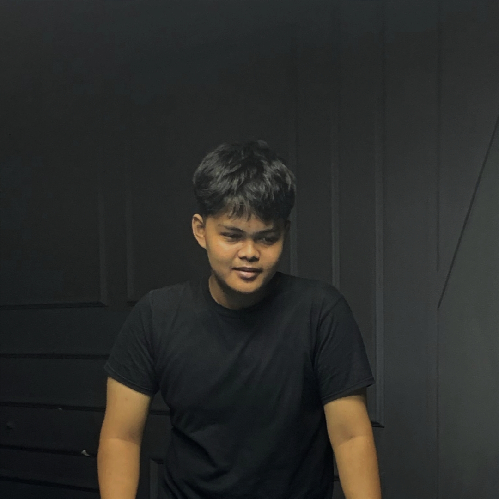
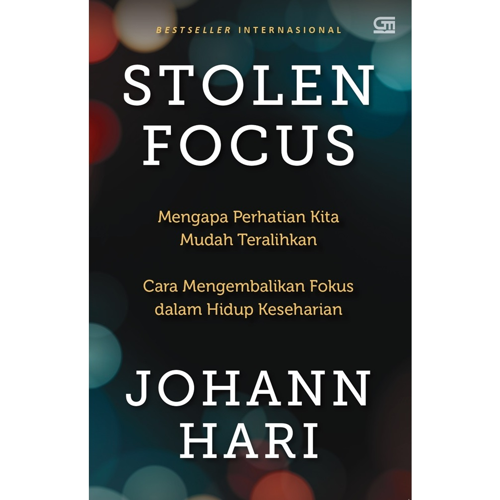
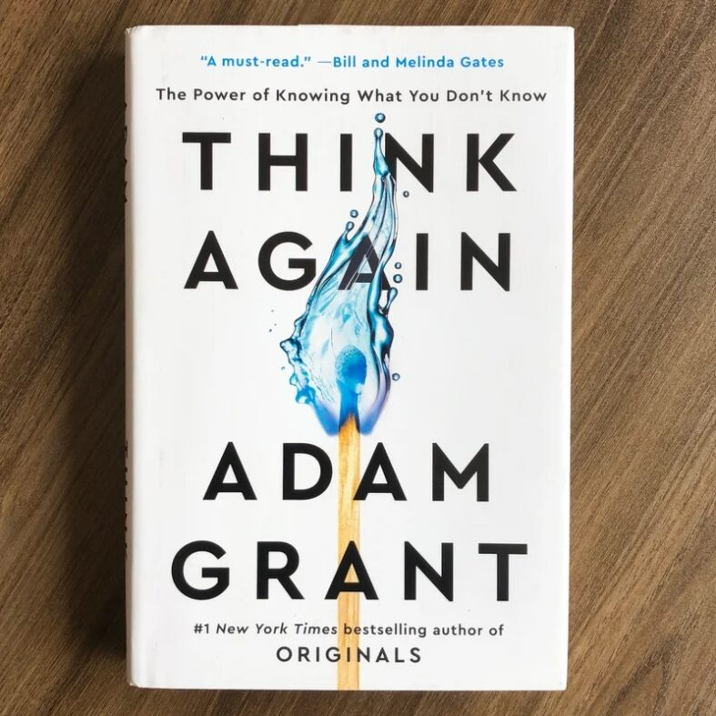

Tech Stack & Tools
 Docker
Docker

Nginx
DevOps Engineer | Mahasiswa Teknik Informatika
Selamat datang di jurnal digital saya. Website ini adalah ruang personal tempat saya mendokumentasikan perjalanan teknis, mencatat literatur yang membentuk pola pikir saya, dan melacak pertumbuhan keahlian infrastruktur saya.

Karya: Johann Hari
"Kemampuan kita untuk fokus tidak runtuh begitu saja, melainkan direbut oleh desain sistem yang mengelilingi kita."

Karya: Adam Grant
"Sedikit pengetahuan dapat membuat kita terlalu percaya diri, selalu lah merasa sebagai pemula"
Docker

Nginx